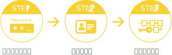

極楽ID認証サービス提供者
株式会社 Virtual Wall
極楽IDは、各ユーザーが各事業者のプライベートネットワークと接続する際に必要とされるユーザー毎のID（42桁の英数字で構成されるブロックチェーン上のウォレットアドレス）です。ユーザーが設定するパスワード（8文字以上の英文字の大文字と小文字を含めた英数字）とセットで認証キーとして使用します。
極楽IDのご利用イメージ

Point
極楽IDを認証することで、ブロックチェーン上の各事業者プライベートネットワークにアクセスできます。これにより、ブロックチェーン技術を活用した改ざん耐性の高い仕組み、金融商品取引業者が展開するアプリケーションとの連携等、各種サービスでご利用いただけます。
極楽ID認証が必要とされる各種システムにおいては、同サービス上で必要とされる個別のユーザーID・ログイン認証と極楽ID認証を紐づけることができます。これにより、各種サービスとログイン連携することなどが可能になります。
他のIDと連携
Point
端末のフェイスIDを有効化しておけば、極楽ID認証での42桁の英数字 + 8文字以上のパスワードを手動で入力しなくても、極楽ID認証が行えます。
極楽IDは、ブロックチェーン情報システムの管理を行う株式会社Virtual Wallが提供する専用インターフェースから最短5分で無料で発行できます。
※極楽IDの取得には審査があり、時間がかかる場合があります。
極楽ID取得までの３つのステップ

申請・登録の際に必要な個人情報
- 住所
- 氏名
- 生年月日（年齢）
- 性別
- 連絡先（メールアドレスと携帯電話）
Point
極楽IDの取得については、極楽IDに関する利用規約及びプライバシーポリシーをご確認の上、手続きに進んでください。
その他、極楽IDに関するご不明な点・ご質問等がございましたら、株式会社Virtual Wallまでお気軽にお問い合わせください。
CONTACT US
極楽IDに関するお問い合わせ